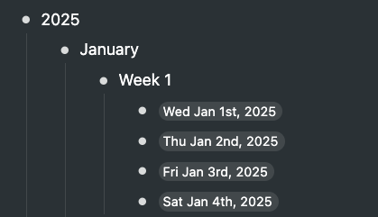
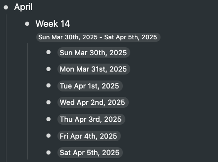

Each option represents one heading of your calendar. Dates that fall under that specific year, month, or week will be placed under that heading. Below is an eample with all heading selected.  "Show week range" adds a Workflowy date range with that week's start and end dates as a note under the week heading. Please note that sometimes a date from one month will be placed in the next month's node if the week crosses over. 